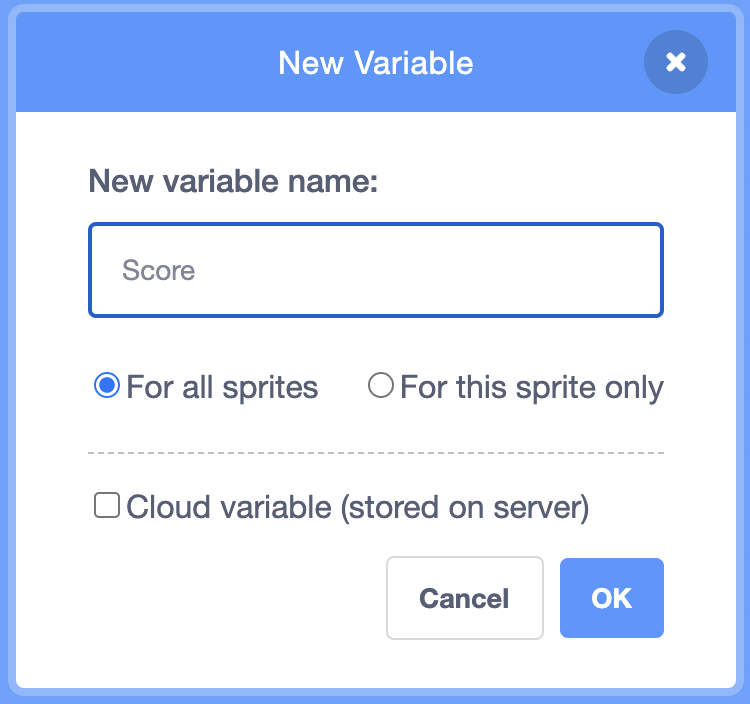
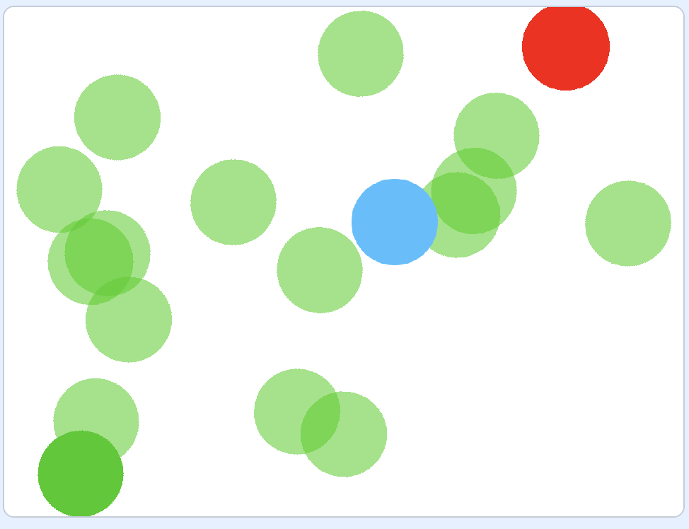
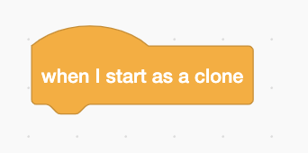
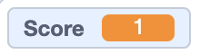
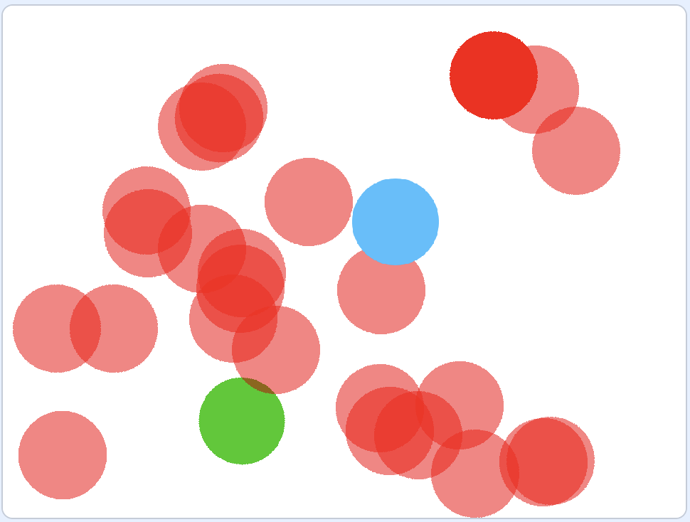

First, we are going to create the score variable to keep track during the game.

Steps
Create a new variable and name it "Score."
In the Player's code, make sure that the score is set to zero at the beginning of the game.
Have the Player follow the mouse for the entire game.
Before we can make more friends, we have to make our current one move.
Steps
For the entire game, we want the Friends to move around the screen. Choose a random direction for the sprite to point; your bounds should be -180 and 180 (a full circle).
For the entire game, change directions every 250 steps. But have the sprite only move 10 steps at a time. How many times do you need to repeat this until you get to 250?
Continuously check to make sure that the sprite isn't on the edge of the screen... if it is, have it bounce.
Now we will make sure that we have enough friends to help us win the game. Let's get to cloning!

Steps
Every time after moving 250 steps, the green circle should clone itself.
Currently, every time we make a clone, it'll look exactly the same as the original - let's change this. Begin editing code for when the clone begins. What type of block is this?

In order to make the clones look different, set the ghost effect to 50 at the beginning of the clone's life.
Have the clones slowly approach the Player. How do we get the clones to move towards the Player? How many steps should each clone move at once (think about whether moving 10 steps is slower or faster than moving 1 step)?
Each clone should move only 300 steps before it deletes itself.
How will the Player earn points? By reaching its friends.

Attempt this by yourself, here are some questions to consider:
How does the clone know if it's touching the Player?
How can we show that the score changes when the Players earns a point?
Should the clone still exist after the Player reaches it or should it delete?

Repeat the process of creating clones to the Enemy sprite.
However, the enemies make the Player lose 3 points. Reflect this in the score variable.
We need to be able to stop the game when the Player either wins or loses.
Steps (in the same section of code already written for the Player sprite)
Throughout the entire game, forever, check the value of the score. If the score is greater than 20, the Player should win. How can the Player tell the user that they won?
Similarly to the step before, if the score is less than -20, the Player sprite should tell the user that they lost.
In both cases 1 and 2, the script should stop to end the game.
Once you have a working maze game, choose one or more additional features to add!
Draw your own maze background! You can do this by changing the backdrop. If you want to make the superhero smaller, you can do that with a block in the Looks category
Change the sprites for the player, home and goal of the maze
Make something exciting happen when the game is lost or won
Look at other scratch users' mazes here for more inspiration, or think of your own additons!
When you're finished, be sure to save and share your project, and then add it to the studio: